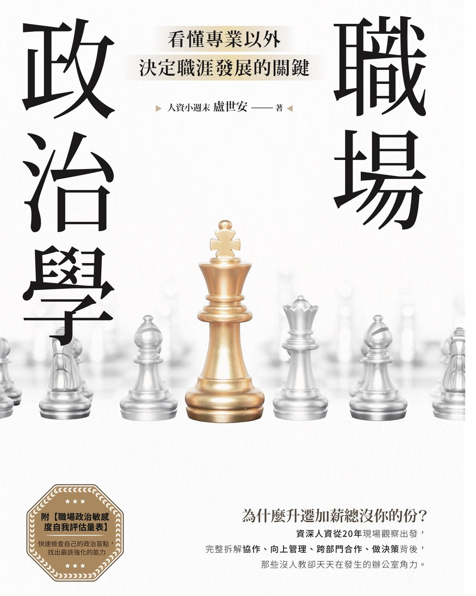

為什麼事情都是我做，功勞卻是別人的？

如果你曾經想過
為什麼能力普通的人比我更容易被主管重用？
為什麼每次升遷都差臨門一腳？
如果這些疑問一直沒有答案，本書就是為你寫的。
職場有兩張地圖
看得見的
部門・職稱・組織層級・正式匯報線
看不見的
影響力・關係・利益交換・風險
政治智商 PQ（Political Quotient）就是讀懂看不見的地圖的能力
精選金句
哪一句，說中了你的辦公室？
量表測驗
20題
職場政治敏感度自我評估量表
借用你的五分鐘，依你最近 3 到 6 個月的真實工作情況作答。
完成此量表，你會看見自己的—
四象限定位三項能力分數目前最值得留意的能力面向
購書資訊
《職場政治學》
看懂專業以外，決定職涯發展的關鍵
- 出版社
- 商周出版 Live & Learn 151
- 定價
- NT$480 ／ HK$160
- ISBN
- 978-626-460-109-2
- 分類
- 商業管理、職場工作術
書號 BH6151
隨書附：職場政治敏感度自我評估量表（二十題．附計分工作表與能力圖譜）
封面設計：柯俊仰 Chun Yang Ko